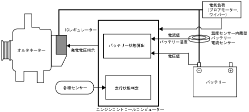

| Charging Control System |
| ● |
By lowering the generated voltage during vehicle acceleration and raising it during deceleration, the engine load caused by alternator power generation is reduced, improving fuel economy. During idling or constant speed driving, the integrated current value*
approaches the target value.
|
| HINT |
| * |
The integrated current value is the integrated value of the battery input/output current detected by the current sensor.
|
 |
 Battery Current Sensor Battery Current Sensor
|
| Battery Temperature Sensor
|
| Fail-safe Function
|